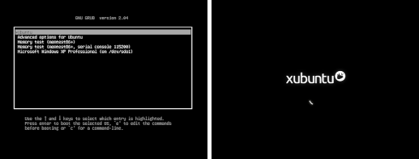
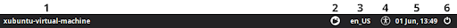
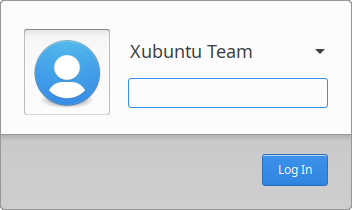
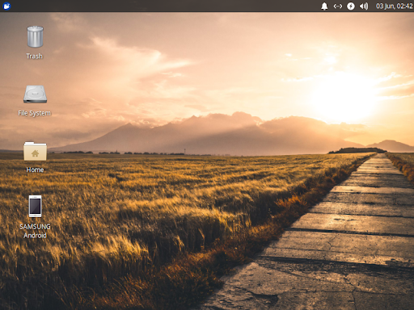
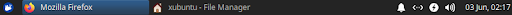
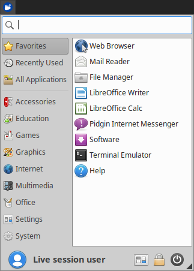
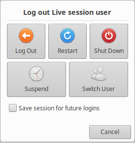

Caso tenha instalado o Xubuntu em conjunto com outro SO (Sistema operativo), também conhecido como arranque duplo, ser-lhe-á apresentado o menu de arranque do GRUB quando ligar o seu computador. Este menu oferece-lhe opções para iniciar o Xubuntu, iniciar o Xubuntu com opções avançadas, executar um teste de memória ou iniciar outros SOs. Pode premir Esc antes do arranque para aceder ao menu do GRUB caso não se encontre num sistema de arranque duplo.
Assim que o processo de arranque iniciar, verá o ecrã inicial do Xubuntu com uma animação circular.

![[Nota]](../../libs-common/images/note.png)
|
|
|
Caso pretenda personalizar a aparência e o comportamento do menu de arranque do GRUB, pode instalar o personalizador do GRUB ( |
Quando o processo de arranque terminar, aparece o ecrã de início de sessão. Contém um painel na parte superior e uma caixa de diálogo de início de sessão no centro do ecrã. Da esquerda para a direita, o painel contém o nome do computador, o seletor de sessão, o seletor de idioma/locale, o seletor de opções de acessibilidade, a data e hora e as opções de término de sessão.

O ecrã de início de sessão permite-lhe selecionar uma nome de conta e introduzir a palavra-passe para iniciar essa sessão, Não verá o ecrã de início de sessão caso tenha selecionado a opção Iniciar sessão automaticamente no ecrã do instalador Quem é?.

|
|
|
|
Para ativar ou inativar o início de sessão automático de uma conta de utilizador, abra Utilizadores e grupos, o qual pode ser encontrado no |
À semelhança do ecrã de início de sessão, o ambiente gráfico padrão do Xubuntu possui um único painel localizado no topo do ecrã, um papel de parede e ícones do ambiente de trabalho.

O painel é utilizado para executar e alternar entre aplicações bem como fornecer um acesso fácil aos indicadores de estado interativos do sistema de a consultar e alterar o estado de componentes importantes do sistema.

No lado esquerdo do ecrã encontrará o botão do  , o qual possui o ícone do logótipo do Xubuntu. Junto dele encontra-se a lista das aplicações em execução com janelas disponíveis, conhecida como lista de janelas ou botões da barra de tarefas.
, o qual possui o ícone do logótipo do Xubuntu. Junto dele encontra-se a lista das aplicações em execução com janelas disponíveis, conhecida como lista de janelas ou botões da barra de tarefas.
Do lado direito do painel encontra-se a Área de notificações, a qual contém indicadores que apresentam informações de estado, tais como a ligação à rede e o volume de som. O primeiro indicador apresentado à direita é o relógio, que apresenta a data e hora do sistema. Um clique no relógio mostra o calendário. Alguns ícones aparecem e desaparecem com base no contexto. O ícone de Bluetooth, por exemplo, aparecerá quando um adaptador Bluetooth estiver presente. A área de notificações também aloja ícones da bandeja do sistema de aplicações em execução que suportem essa funcionalidade, tais como o Transmission ou ou Audacious.
|
|
|
|
A localização do painel, dos seus componentes e das várias opções pode ser personalizada se clicar com o botão direito do rato no painel e selecionar → . |

Clicar no botão do  do painel ou pressionar a combinação de teclas
do painel ou pressionar a combinação de teclas  Ctrl+Esc irá abrir o menu, o qual possui cinco (5) secções:
Ctrl+Esc irá abrir o menu, o qual possui cinco (5) secções:
Um campo de texto para filtrar aplicações instaladas.
Uma coluna com uma lista de categorias de aplicações.
Uma lista de aplicações da categoria selecionada. Os favoritos são selecionados e apresentados por defeito.
O nome e fotografia da conta do utilizador.
Os botões de comando para as  Definições, bloqueio do ecrã ecrã de término da sessão.
Definições, bloqueio do ecrã ecrã de término da sessão.
|
|
|
|
Para personalizar a aparência e o comportamento do |
O ambiente de trabalho por defeito possui três ícones principais -- Pasta Pessoal, Sistema de ficheiros e Lixo - bem como ícones para partições e dispositivos removíveis, caso estejam presentes. Podem ser adicionados ficheiros, diretórios, lançadores de aplicações e atalhos para páginas Web adicionais ao ambiente gráfico e podem ser dispostos de forma manual ou automática. É possível configurar o papel de parede do ambiente de trabalho e quais os ícones a serem apresentados, bem como as suas opções, através do clique com o botão direito do rato numa área vazia do ambiente de trabalho e da seleção da opção Definições do ambiente de trabalho... do menu de contexto.
O Xubuntu fornece um conjunto de comandos para gerir a sua sessão. Estes comandos encontram-se acessíveis a partir da secção de botões de comando do bem como através de atalhos do teclado.
bem como através de atalhos do teclado.
O primeiro comando é o botão , o qual bloqueia a sessão atual e apresenta o ecrã de início de sessão para retomar a sessão. O bloqueio do ecrã também se encontra acessível através de dois atalhos do teclado:  Super+L e
Super+L e  Ctrl+Alt+L.
Ctrl+Alt+L.

Os restantes comandos de sessão encontram-se acessíveis através do botão , bem como do atalho do teclado  Ctrl+Alt+Delete, o qual abre uma janela e oferece acesso a comandos para:
Ctrl+Alt+Delete, o qual abre uma janela e oferece acesso a comandos para:
Sair - Termina a sessão atual.
Reiniciar - Reinicia o computador.
Desligar - Encerra o computador.
Suspender - Coloca o computador em suspensão e faz com que consuma pouca energia.
Hibernar - Guarda a sessão atual e desliga o computador. Quando o reiniciar, a sua sessão será retomada.
Trocar de utilizador - Inicia sessão com outra conta de utilizador.
|
|
|
|
É possível aceder aos comandos de gestão de sessões a partir do painel se clicar com o botão direito do rato no painel e selecionar → e depois adicionar a entrada Botões de ação. Também é possível adicionar comandos de gestão de sessões adicionais ao |
|
|
|
|
A hibernação encontra-se desativada por defeito no Xubuntu e podem ser encontradas instruções para a ativar em Ativar a hibernação. |
 |
 |
|
| Capítulo 2. Instalação |

|
Capítulo 4. Aplicações predefinidas |